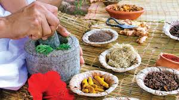
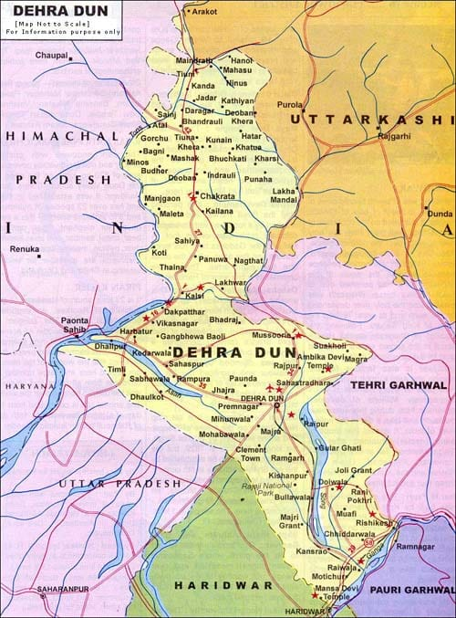

Dehradun is a renowned hub for high-quality herbal products, owing to its natural biodiversity and favorable climate conditions. The herbal products include items made from Tulsi, Ashwagandha, Giloy, Brahmi, Neem, and many other medicinal herbs. These herbs are used to create oils, supplements, teas, powders, skincare, and wellness items. The region’s pristine environment and Himalayan foothills contribute to the growth of potent, organically grown herbs. These products are widely used in Ayurveda and holistic healing practices and have gained global recognition for their purity and therapeutic value. Dehradun also hosts research centers and herbal farms which ensure standardization, sustainability, and quality in production.
Herbal knowledge in Dehradun dates back centuries and is deeply rooted in the traditions of Ayurveda and natural healing. Home to the prestigious Forest Research Institute and nearby Patanjali Yogpeeth, Dehradun has emerged as a leader in India’s herbal industry. Local villagers, women-led cooperatives, and small-scale entrepreneurs are actively involved in the cultivation, harvesting, and processing of herbs. The products are not only medicinal but also form a part of everyday life, from herbal teas to cosmetic care. These items are produced without chemicals or synthetic additives, promoting a return to nature and sustainability.
For wholesale and retail inquiries, contact Herbal Wellness Dehradun. You can also visit the Rajpur Road herbal market or check out local Ayurvedic stores and wellness centers in Dehradun. Their official website is https://www.getatoz.co/l/uttarakhand/dehradun/ayurvedic-herbal-products-and-medicines/21540.

- Dehradun's herbal traditions go back to the times of Rishis who used Himalayan herbs for healing.
- Patanjali, one of India's biggest Ayurvedic brands, has its base near Dehradun.
- The region is home to over 300 species of medicinal plants, many of which are rare and used globally.
- Traditional healers or "Vaidyas" in Dehradun still follow ancient scripts and texts in treatment.
- The city is known as the "Herbal Valley of India" due to its rich medicinal flora.